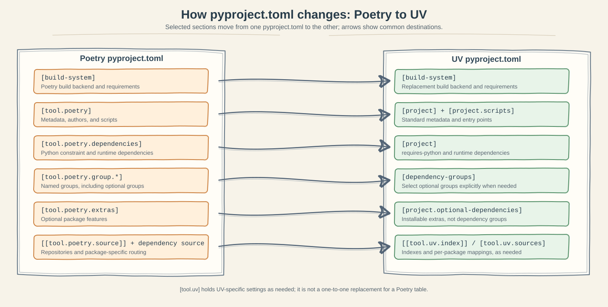
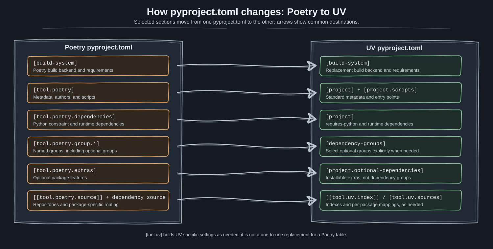

Migrate a Poetry-based solution to UV#
Introduction#
This guide describes how to migrate an existing SAF solution from Poetry to UV. Current SAF solution templates generate UV-based solutions. During the transition period, SAF CLI and desktop installer commands support both UV-managed and Poetry-managed solutions, provided you use versions that support UV. Each solution must use only one dependency manager. Poetry is deprecated for SAF solutions, and support is expected to be discontinued in a future SAF release. Check the SAF release notes for current support and deprecation timelines.
UV must be installed before you can follow the commands in this guide. See the official UV installation instructions for other platforms and installation methods. For example:
# Windows with WinGet
winget install --id=astral-sh.uv -e
# Linux
curl -LsSf https://astral.sh/uv/install.sh | sh
Open a new terminal if needed, then confirm UV is available:
uv --version
Before migrating, use SAF CLI version 4.5.0 or later, which supports UV.
Check the CLI version with:
saf --version
If you also build desktop installers for the migrated solution, use SAF
desktop installer version 1.20.0 or later. Check the SAF release notes for
any updated minimum-version requirements.
Before choosing an automated or manual approach, keep unchanged backups outside the solution root until the migrated solution passes validation. Back up each applicable file:
pyproject.tomlpoetry.lock, if the project has onepoetry.toml, if the project has one
You can try either of two third-party tools to automate the conversion. Choose one tool; you do not need to run both. If neither produces a suitable result, use the manual migration steps below. Complete the validation steps at the end of this guide whichever approach you use.
Automated migration#
Option 1: migrate-to-uv#
Try the community-maintained migrate-to-uv first. It supports Poetry and converts project metadata, dependencies, groups, package sources, and other settings. Its source repository contains the code and issue tracker. It is not an Ansys or SAF tool, so review its changes rather than assuming the result is correct for your solution.
The commands below pin migrate-to-uv to version 0.12.0 so the same command does not silently use a newer release
if the tool changes. This is the version referenced when this guide was
updated, not a permanent recommendation. Before changing the pin, review the
project’s documentation and release history, and verify the release’s
PyPI provenance.
Work in a branch or copy of your solution.
Install UV as described above, then open a terminal in the solution root.
Preview the changes:
uvx migrate-to-uv@0.12.0 --package-manager poetry --dry-runIf the preview looks reasonable, run the migration:
uvx migrate-to-uv@0.12.0 --package-manager poetryReview the output and the resulting
pyproject.tomlanduv.lock. Check SAF-specific settings, dependency groups, private package sources, selected build backend, and packaged files. The tool attempts to preserve locked versions when it finds the original lockfile, but verify the result.
If the tool reports an error and aborts, read the reported field or feature.
When the message suggests a safe equivalent, correct the source configuration
and retry from a clean copy. If locking fails after conversion, restore the
original files from your backup and remove any generated uv.lock before
rerunning the migration without asking the tool to create the lockfile:
uvx migrate-to-uv@0.12.0 --package-manager poetry --skip-lock
Then review the converted project and generate the lockfile yourself:
uv lock
The documented option is --skip-lock (not --no-lock). If the tool still
cannot complete the conversion, leaves an unsuitable result, or reports an
issue you cannot resolve confidently, use the manual migration below. Do not
use --ignore-errors for a routine migration; it allows a partial migration.
If the tool completes with warnings, review and address each warning before
continuing. If locking fails because of a private package index, configure UV
index credentials as described in the tool’s private-index instructions.
If you selected uv_build and the tool reports unsupported package
metadata, try --build-backend hatch only if Hatchling fits your project;
otherwise use the manual route.
Option 2: convert-poetry2uv#
As an alternative to migrate-to-uv, convert-poetry2uv converts
pyproject.toml but does not create uv.lock. Its GitHub README is its
usage documentation; the package is also published on PyPI. Pin the version when running
it as a tool. For version 0.3.14, preview the conversion with:
uvx convert-poetry2uv@0.3.14 pyproject.toml -n
This writes a preview to pyproject_temp_uv.toml. Review it, then run the
conversion on a clean copy without -n:
uvx convert-poetry2uv@0.3.14 pyproject.toml
The converter saves the original as pyproject.toml.org when it writes the
converted file; move that backup outside the solution root. It does not convert
the lockfile or remove every Poetry-specific file. Before creating uv.lock,
follow Step 3 below to remove poetry.lock and check that no active Poetry
metadata remains. Do not rename poetry.lock to uv.lock.
The converter’s README warns that it removes Poetry’s build-system
configuration and does not preserve optional dependency-group behavior as-is.
Inspect the version constraints carefully as well. Choose and configure a
replacement build backend, correct any conversion issues, then run uv lock
and the validation steps below. If the preview is not suitable, use the manual
migration instead.
If an automated migration succeeds, continue with Steps 4–6 below to verify the environment, update workflows, and complete the migration. If neither automated option produces a suitable result, follow Steps 1–3 of the manual route:
Manual migration#
Follow this section if you are migrating by hand. If an automated option produced a suitable UV configuration, skip Steps 1–3 and continue with Steps 4–6 to validate the migration and update project workflows.
Examples: see how pyproject.toml changes#
The diagram focuses on selected sections moving from a Poetry-based
pyproject.toml to a UV-based pyproject.toml. It is not a complete
migration map; review each field’s meaning and destination for your solution.

Selected changes from a Poetry-based to a UV-based pyproject.toml.#

Selected changes from a Poetry-based to a UV-based pyproject.toml.#
Complete example: SAF Solution Examples#
This complete example is based on the real SAF Solution Examples configuration. The two files, shown side by side are the Poetry copy that preserves the source configuration, and the UV copy that shows one possible migration using Hatchling.
[build-system]
requires = ["poetry-core>=2.0.0", "setuptools>=65.0"]
build-backend = "poetry.core.masonry.api"
[build-system-requirements]
build-system-version = "2.5.1"
[tool.poetry]
name = "saf-solutions-examples"
version = "0.2.dev0"
description = "Collection of simple SAF/Dash usage examples."
license = "Apache-2.0"
authors = ["ANSYS, Inc. <pyansys-core@synopsys.com>"]
maintainers = ["ANSYS, Inc. <pyansys-core@synopsys.com>"]
readme = "README.md"
keywords = ["Ansys Solutions"]
classifiers = [
"Development Status :: 3 - Alpha",
"Intended Audience :: Other Audience",
"License :: OSI Approved :: Apache Software License",
"Natural Language :: English",
"Operating System :: Microsoft :: Windows",
"Programming Language :: Python :: 3.11",
"Programming Language :: Python :: 3.12",
"Topic :: Scientific/Engineering",
]
packages = [{ include = "saf", from = "src" }]
[[tool.poetry.source]]
name = "PyPI"
priority = "primary"
[tool.poetry.dependencies]
python = ">=3.11,<3.13"
ansys-dynamicreporting-core = "^0.10.6"
ansys-saf-sdk = { version = "^0.5.0", extras = ["core-pim", "instance-management-all", "core-hps"], allow-prereleases = true }
ansys-tools-visualization-interface = "^0.12.1"
ansys-visor-viewer = "^1.0.1"
h5py = "^3.12"
numpy = "^1.26.4"
pillow = "^13.0.0"
scipy = "^1.15"
vtk = "^9.6.1"
soupsieve = [
{ version = "^2.10", python = "<3.11.5" },
{ version = "^4.0", python = ">=3.11.5" },
]
[tool.poetry.group.desktop]
optional = true
[tool.poetry.group.desktop.dependencies]
ansys-saf-sdk = { version = "^0.5.0", extras = ["desktop"], allow-prereleases = true }
[tool.poetry.group.ui]
optional = true
[tool.poetry.group.ui.dependencies]
ansys-solutions-dash-super-components = { version = "0.2.dev8", allow-prereleases = true }
dash = "^3.0.0"
dash_bootstrap_components = { version = "^1.2" }
dash-extensions = ">=0.1.13"
dash-iconify = "^0.1"
dash-mantine-components = "^2.6"
dash-uploader = "^0.6"
pandas = "^2.2.2"
[tool.poetry.group.tests]
optional = true
[tool.poetry.group.tests.dependencies]
ansys-saf-cli = { path = "../packages/saf-cli", develop = true }
coverage = "^7.2.6"
filelock = "^4.2.1"
mock = "^4.0.3"
pytest = "^9.1.1"
pytest-cov = "^7.0.0"
pytest-html = "^4.1.1"
pytest-md = "^0.2.0"
pytest-dependency = "^0.5.1"
pytest-flakes = "^4.0.5"
pytest-pycodestyle = "^2.5.0"
pytest-pythonpath = "^0.7"
pytest-xdist = "^3.0.2"
pytest-mock = "^3.12"
selenium = "^4.0"
[tool.poetry.group.build]
optional = true
[tool.poetry.group.build.dependencies]
build = "^0.8.0"
twine = "6.0.1"
pkginfo = "^1.12.1.2"
pyinstaller = { version = "^6.16", python = "<3.15" }
toml = "^0.10.2"
pyc-wheel = "^1.2.7"
ansys-saf-sdk = { version = "^0.5.0", extras = ["build"], allow-prereleases = true }
[tool.poetry.group.style]
optional = true
[tool.poetry.group.style.dependencies]
black = ">24"
isort = "5.13.2"
flake8 = { version = "7.0.0", python = ">=3.8.1,<3.11" }
codespell = "2.2.6"
pydocstyle = "6.3.0"
[tool.poetry.plugins."console_scripts"]
examples_main = "ansys.solutions.examples.main:main"
[tool.black]
line-length = 120
[tool.isort]
profile = "black"
force_sort_within_sections = true
line_length = 120
default_section = "THIRDPARTY"
src_paths = ["doc", "src", "tests"]
[tool.codespell]
skip = '.github,.venv,.tox,requirements,CODEOWNERS,*.tmp,CHANGELOG.md,poetry.lock,*.vtu'
count = ""
quiet-level = 3
check-hidden = ""
ignore-words = ".codespell.ignore"
[tool.pydocstyle]
select = ["D107"]
[tool.coverage.run]
source = ["ansys.solutions"]
[tool.coverage.report]
show_missing = true
[build-system]
requires = ["hatchling"]
build-backend = "hatchling.build"
[project]
name = "saf-solutions-examples"
version = "0.2.dev0"
description = "Collection of simple SAF/Dash usage examples."
license = "Apache-2.0"
authors = [{ name = "ANSYS, Inc.", email = "pyansys-core@synopsys.com" }]
maintainers = [{ name = "ANSYS, Inc.", email = "pyansys-core@synopsys.com" }]
readme = "README.md"
keywords = ["Ansys Solutions"]
requires-python = ">=3.11,<3.13"
classifiers = [
"Development Status :: 3 - Alpha",
"Intended Audience :: Other Audience",
"License :: OSI Approved :: Apache Software License",
"Natural Language :: English",
"Operating System :: Microsoft :: Windows",
"Programming Language :: Python :: 3.11",
"Programming Language :: Python :: 3.12",
"Topic :: Scientific/Engineering",
]
dependencies = [
"ansys-dynamicreporting-core>=0.10.6,<0.11.0",
"ansys-saf-sdk[core-pim,instance-management-all,core-hps]>=0.5.0,<0.6.0",
"ansys-tools-visualization-interface>=0.12.1,<0.13.0",
"ansys-visor-viewer>=1.0.1,<2.0.0",
"h5py>=3.12,<4.0",
"numpy>=1.26.4,<2.0.0",
"pillow>=13.0.0,<14.0.0",
"scipy>=1.15,<2.0",
"vtk>=9.6.1,<10.0.0",
"soupsieve>=2.10,<3.0; python_full_version < '3.11.5'",
"soupsieve>=4.0,<5.0; python_full_version >= '3.11.5'",
]
[project.scripts]
examples_main = "ansys.solutions.examples.main:main"
[dependency-groups]
desktop = [
"ansys-saf-sdk[desktop]>=0.5.0,<0.6.0",
]
ui = [
"ansys-solutions-dash-super-components==0.2.dev8",
"dash>=3.0.0,<4.0.0",
"dash-bootstrap-components>=1.2,<2.0",
"dash-extensions>=0.1.13",
"dash-iconify>=0.1,<0.2",
"dash-mantine-components>=2.6,<3.0",
"dash-uploader>=0.6,<0.7",
"pandas>=2.2.2,<3.0.0",
]
tests = [
"ansys-saf-cli",
"coverage>=7.2.6,<8.0.0",
"filelock>=4.2.1,<5.0.0",
"mock>=4.0.3,<5.0.0",
"pytest>=9.1.1,<10.0.0",
"pytest-cov>=7.0.0,<8.0.0",
"pytest-html>=4.1.1,<5.0.0",
"pytest-md>=0.2.0,<0.3.0",
"pytest-dependency>=0.5.1,<0.6.0",
"pytest-flakes>=4.0.5,<5.0.0",
"pytest-pycodestyle>=2.5.0,<3.0.0",
"pytest-pythonpath>=0.7,<0.8.0",
"pytest-xdist>=3.0.2,<4.0.0",
"pytest-mock>=3.12,<4.0.0",
"selenium>=4.0,<5.0",
]
build = [
"build>=0.8.0,<0.9.0",
"twine==6.0.1",
"pkginfo>=1.12.1.2,<2.0.0",
"pyinstaller>=6.16,<7.0; python_version < '3.15'",
"toml>=0.10.2,<0.11.0",
"pyc-wheel>=1.2.7,<2.0.0",
"ansys-saf-sdk[build]>=0.5.0,<0.6.0",
]
style = [
"black>24",
"isort==5.13.2",
"flake8==7.0.0; python_full_version >= '3.8.1' and python_full_version < '3.11'",
"codespell==2.2.6",
"pydocstyle==6.3.0",
]
[tool.uv]
package = true
[tool.uv.sources]
ansys-saf-cli = { path = "../packages/saf-cli", editable = true }
[tool.hatch.build.targets.wheel]
packages = ["src/saf"]
[tool.black]
line-length = 120
[tool.isort]
profile = "black"
force_sort_within_sections = true
line_length = 120
default_section = "THIRDPARTY"
src_paths = ["doc", "src", "tests"]
[tool.codespell]
skip = '.github,.venv,.tox,requirements,CODEOWNERS,*.tmp,CHANGELOG.md,uv.lock,*.vtu'
count = ""
quiet-level = 3
check-hidden = ""
ignore-words = ".codespell.ignore"
[tool.pydocstyle]
select = ["D107"]
[tool.coverage.run]
source = ["ansys.solutions"]
[tool.coverage.report]
show_missing = true
The migration choices in this example are specific to this project:
The Poetry
[build-system-requirements]table pins Poetry for SAF’s Poetry setup flow. It is not needed for a UV project and is omitted.The Poetry source declares PyPI as the primary source. UV uses PyPI by default, so no index table is needed here.
Poetry’s
packagesentry becomes Hatchling’s wheel package selection. Verify the built wheel includes the package data your solution needs.Poetry’s console script becomes
[project.scripts]. The original file has no[tool.poetry.extras]table, so this example has no[project.optional-dependencies]table.The local editable
ansys-saf-clidependency is listed in thetestsgroup and mapped to its path under[tool.uv.sources]. UV dependency groups are not installed unless selected; the path mapping is illustrated in Additional dependency and metadata cases.Poetry allows prereleases for selected
ansys-saf-sdkdependencies. UV does not offer a directly equivalent per-dependency setting. If preserving prerelease selection matters, use explicit prerelease constraints or decide whether the broaderprerelease = "allow"setting is appropriate.The Codespell skip list is updated from
poetry.locktouv.lock.
Focused examples#
The complete example above shows a real SAF solution. The focused examples below show a minimal project and several cases that may need separate handling: local paths, private indexes, Git and direct URLs, package extras and environment markers, and project URLs. Use only the examples relevant to your solution; they are not steps to apply in sequence. UV-specific settings are optional and are covered in UV configuration. Step 2 contains the field-by-field migration tables.
Minimal project#
[build-system]
requires = ["poetry-core>=2.0.0"]
build-backend = "poetry.core.masonry.api"
[tool.poetry]
name = "my-solution"
version = "0.1.0"
description = "An example SAF solution"
authors = ["Example Author <author@example.com>"]
[tool.poetry.dependencies]
python = ">=3.10,<3.14"
ansys-saf-glow-engine = "^1.0"
[tool.poetry.group.ui]
optional = true
[tool.poetry.group.ui.dependencies]
dash = "^2.0"
[tool.poetry.group.tests]
optional = true
[tool.poetry.group.tests.dependencies]
pytest = "^8.0"
[build-system]
requires = ["hatchling"]
build-backend = "hatchling.build"
[project]
name = "my-solution"
version = "0.1.0"
description = "An example SAF solution"
authors = [{ name = "Example Author", email = "author@example.com" }]
requires-python = ">=3.10,<3.14"
dependencies = [
"ansys-saf-glow-engine>=1.0,<2.0",
]
[dependency-groups]
ui = [
"dash>=2.0,<3.0",
]
tests = [
"pytest>=8.0,<9.0",
]
[tool.uv]
package = true
Additional dependency and metadata cases#
Local path dependency#
Declare a local package as a dependency, then map its name to a path in
[tool.uv.sources]. Paths are relative to the directory containing
pyproject.toml. Use develop = true in Poetry and editable = true in
UV when the package should be installed in editable mode; omit those options
for a regular local install.
[tool.poetry.dependencies]
my-local-package = { path = "../my-local-package", develop = true }
[project]
dependencies = [
"my-local-package",
]
[tool.uv.sources]
my-local-package = { path = "../my-local-package", editable = true }
Private index and package routing#
Keep credentials out of both files. Configure them with an approved credential store or environment mechanism. An explicit index makes the intended source clear for the private package.
[[tool.poetry.source]]
name = "private"
url = "https://packages.example.com/simple/"
priority = "explicit"
[tool.poetry.dependencies]
private-lib = { version = "^2.4", source = "private" }
[project]
dependencies = ["private-lib>=2.4,<3.0"]
[[tool.uv.index]]
name = "private"
url = "https://packages.example.com/simple/"
explicit = true
[tool.uv.sources]
private-lib = { index = "private" }
Git and direct URL dependencies#
Preserve the exact Git revision. A direct archive URL belongs in the PEP 508 requirement; verify the URL and artifact integrity policy for your project.
[tool.poetry.dependencies]
shared-lib = { git = "https://github.com/example/shared-lib.git", rev = "0123456789abcdef0123456789abcdef01234567" }
wheel-lib = { url = "https://packages.example.com/files/wheel_lib-1.2.3-py3-none-any.whl" }
[project]
dependencies = [
"shared-lib",
"wheel-lib @ https://packages.example.com/files/wheel_lib-1.2.3-py3-none-any.whl",
]
[tool.uv.sources]
shared-lib = { git = "https://github.com/example/shared-lib.git", rev = "0123456789abcdef0123456789abcdef01234567" }
Extras and environment markers#
Keep package extras (in brackets after the name) distinct from Poetry optional groups, and preserve each Python or platform marker.
[tool.poetry.dependencies]
ansys-saf-sdk = { version = "^0.5.0", extras = ["desktop"], python = ">=3.11,<3.13" }
windows-only = { version = "^2.0", markers = "sys_platform == 'win32'" }
[project]
dependencies = [
"ansys-saf-sdk[desktop]>=0.5.0,<0.6.0; python_version >= '3.11' and python_version < '3.13'",
"windows-only>=2.0,<3.0; sys_platform == 'win32'",
]
Published optional features#
Use [project.optional-dependencies] for published extras. This is different
from [dependency-groups], which is for development and workflow
dependencies.
[tool.poetry.dependencies]
reports-lib = { version = "^2.0", optional = true }
[tool.poetry.extras]
reports = ["reports-lib"]
[project.optional-dependencies]
reports = [
"reports-lib>=2.0,<3.0",
]
Project URLs#
These are informational links in package metadata, not dependency download URLs.
[tool.poetry.urls]
Homepage = "https://example.com"
Repository = "https://github.com/example/project"
Documentation = "https://docs.example.com"
[project.urls]
Homepage = "https://example.com"
Repository = "https://github.com/example/project"
Documentation = "https://docs.example.com"
The dependency constraints in the complete example illustrate equivalent ranges for the source project’s Poetry caret constraints. Verify version ranges, markers, source routing, resolved versions, and group selection for your own solution.
Step 1: Prepare the migration#
Before editing the project, inventory:
Runtime dependencies and all Poetry dependency groups, including which groups SAF installs by default and which are selected explicitly.
Python version constraints, extras, platform markers, and environment-specific dependencies.
Package sources, private indexes, Git dependencies and revisions, local paths, and editable dependencies.
Build configuration, package discovery and data files, and commands in CI, scripts, containers, and developer documentation.
Do not assume that generating a UV lockfile preserves the exact versions in
poetry.lock. Review the resolved versions and dependency sources, and run
your solution’s tests after migration.
Step 2: Translate project metadata#
Update pyproject.toml to use standard project metadata and UV configuration.
TOML does not require tables to appear in a particular order, but a readable
UV project commonly puts them in this order: [build-system], [project],
[dependency-groups], then [tool.uv] and any build-backend-specific
settings. uv.lock is a separate file beside pyproject.toml. Use this
order as a guide while translating the Poetry project:
Replace the Poetry build backend in
[build-system]with a suitable non-Poetry build backend; see Build system and package contents.Map project metadata and runtime dependencies to
[project]; see Project metadata and version constraints.Map Poetry dependency groups to
[dependency-groups]; see Dependency groups and extras.Add UV-specific settings and package sources in
[tool.uv]as needed; see UV configuration.Generate
uv.lockafter completing the metadata and source mappings; see Step 3.
For complete before-and-after examples, see Examples.
Build system and package contents#
Important
UV is a dependency manager and project tool. It is not a Python build
backend. If your pyproject.toml uses Poetry’s build backend,
poetry.core.masonry.api, replace it with a suitable non-Poetry build
backend as part of the migration.
Replace Poetry’s build backend with a suitable non-Poetry build backend, and move package discovery and data-file rules to that build backend’s configuration. The complete example uses Hatchling to illustrate one possible choice; select a backend that fits how your solution is packaged. The Python Packaging User Guide’s build-backend recommendations and the build backend documentation are good places to compare options.
Examples include:
Build backend |
May fit when |
Documentation and considerations |
|---|---|---|
You need broad packaging features, including custom discovery or native extension modules. |
Review its package discovery, data-file, and extension-module settings. |
|
You need configurable build targets and file selection. |
Check its file inclusion rules against the files your solution needs. |
|
Your package follows a conventional Python package layout. |
Confirm that its packaging model fits your project structure. |
|
|
Your project contains pure Python code and you want UV’s native build backend. |
uv_build backend documentation. It currently does not build native extension modules. |
These are examples, not interchangeable drop-in replacements. Choose based on your package layout, dynamic metadata, data files, and any compiled extensions. Do not build the distribution yet: finish translating the remaining metadata and make the solution UV-only first.
Project metadata and version constraints#
The standard [project] table uses metadata fields defined by PEP 621.
Preserve the fields present in your Poetry project and translate their meaning,
not just their spelling. See the PEP 621 specification for the complete metadata format.
Translate the Poetry tables one block at a time:
Poetry field or key |
Destination(s) in |
Purpose |
|---|---|---|
|
|
Distribution name of the solution |
|
|
Solution package version; this is not the Python version |
|
|
Short project summary |
|
|
Path to the project README |
|
|
People or organizations responsible for the project; PEP 621 uses
tables with |
|
|
License metadata; check that the new expression preserves its meaning |
|
|
Search terms and package index classifiers |
Poetry field or key |
Destination(s) in |
Purpose |
|---|---|---|
|
|
Python versions supported by the project |
Package entries |
|
Runtime requirements installed with the project |
Poetry field or key |
Destination(s) in |
Purpose |
|---|---|---|
|
|
Named project links |
|
|
Command-line entry points |
Poetry field or key |
Destination(s) in |
Purpose |
|---|---|---|
Extra names in |
|
Optional, user-selectable package features |
PEP 621 also supports project.gui-scripts, project.entry-points,
project.license-files, and project.dynamic. Migrate these when the
solution uses them. If a value such as the version is supplied dynamically by
the build backend, declare it as dynamic instead of setting both a static and
dynamic value. Package discovery and package data rules belong to the selected
build backend’s configuration, not to [project].
Keep SAF-specific metadata such as [saf-cli-version] in
pyproject.toml; it is not replaced by [project].
For UV-managed solutions, include project.requires-python: the SAF CLI uses
it to check that the active Python version is supported.
Important
Poetry’s caret syntax (^), such as ^1.0, is not valid in UV’s
standard [project.dependencies] entries. UV uses PEP 508 version
specifiers, so translate the constraint into explicit bounds instead of
copying the caret expression.
The table covers common Poetry range forms. UV project dependencies use PEP 508
version specifiers (which follow PEP 440); Poetry’s ^ and ~ operators
must be translated. Wildcard ranges can be written as explicit bounds, or as
PEP 440 wildcards where supported. Existing PEP-style comparisons can usually
be kept.
Poetry constraint |
UV constraint |
Meaning |
|---|---|---|
|
|
At least 1.2.3, before 2.0.0 |
|
|
At least 0.2.3, before 0.3.0 |
|
|
At least 0.0.3, before 0.0.4 |
|
|
Allow patch updates within 1.2 |
|
|
Allow patch updates within 1.2 |
|
|
Any 1.x version |
|
|
Any 1.2.x version |
|
|
Lower and upper bounds; usually unchanged |
|
No version specifier (for example, |
Any version allowed by the resolver |
These are examples, not a blanket text-replacement rule. In particular, caret bounds depend on the position of the first nonzero version component. Check the lower and upper bounds of every translated dependency, including Python-version and platform markers. For the full syntax, see the Poetry dependency specification and PEP 440.
Dependency groups and extras#
Use [dependency-groups] for dependencies needed by development or specific
SAF workflows. A group is a named list of requirements; it is not automatically
installed just because it appears in the file. Direct UV commands include the
dev group by default; tool.uv.default-groups can change that selection,
and other groups can be requested explicitly. SAF CLI applies its own group
selection. The main requirements in project.dependencies are installed
with the project.
For example:
[dependency-groups]
desktop = ["ansys-saf-sdk[desktop]>=0.4,<1"]
ui = ["dash>=3,<4"]
doc = ["sphinx>=8,<9"]
tests = ["pytest>=9,<10"]
SAF group selection is controlled by the SAF CLI, not solely by UV’s
default-groups setting. With a CLI version that supports this option, a
command such as saf install <solution> --dependencies ui,tests requests the
named groups; if omitted, the CLI uses that version’s default selection. Check
saf install --help for the defaults and syntax supported by the installed
CLI. Direct UV commands select groups separately, for example:
uv sync --locked --no-default-groups --group ui --group tests
Run this after creating uv.lock in Step 3; Step 4 covers the clean
environment install and validation.
By contrast, [project.optional-dependencies] defines package extras. These
are part of the package’s published metadata and are selected by consumers
installing the package with an extra. Use extras for optional features of the
package API; use dependency groups for local development or SAF environment
workflows. A Poetry optional group is not automatically a package extra, and
changing its table name alone can change how it is installed. See PEP 735 for the dependency-group format and the
UV dependency groups guide for how UV
installs them.
Poetry dependency options#
Poetry dependency tables can include options in addition to a version. In UV, most dependency requirements are strings using the standard PEP 508 format: the package name, optional extras, version specifier, and optional environment marker.
Poetry option |
UV representation |
Example or note |
|---|---|---|
|
Add the version specifier to the requirement string |
|
|
Put extras in brackets immediately after the package name |
|
|
Add a PEP 508 environment marker after |
|
|
Configure the package in |
Preserve the selected source, Git revision, and editable/path behavior |
|
No per-dependency equivalent in a PEP 508 requirement |
UV’s |
For example, the Poetry dependency below requests the SDK’s desktop extra
as part of an optional desktop group:
[tool.poetry.group.desktop]
optional = true
[tool.poetry.group.desktop.dependencies]
ansys-saf-sdk = { version = "^0.5.0", extras = ["desktop"], allow-prereleases = true }
The UV form is a list of requirement strings in the top-level
[dependency-groups] table:
[dependency-groups]
desktop = [
"ansys-saf-sdk[desktop]>=0.5.0,<0.6.0",
]
Here, the desktop key names the dependency group; [desktop] after the
package name requests the desktop extra published by ansys-saf-sdk.
They have different purposes even though their names happen to match. Quote
the entire UV requirement string. For example,
"ansys-saf-sdk[desktop]>=0.5.0,<0.6.0" is valid; writing
"ansys-saf-sdk"[desktop]>=... is not.
For a main dependency with multiple extras, put all extra names in the same bracket pair:
[project]
dependencies = [
"ansys-saf-sdk[core-pim,instance-management-all,core-hps]>=0.5.0,<0.6.0",
]
UV configuration: [tool.uv]#
The [tool.uv] table contains UV-specific settings. It is separate from the
standard [project] metadata, and most projects need only a few of these
settings. Do not copy every possible setting into a solution; add only settings
that match its build, dependency, and installation requirements.
Map package sources carefully. Poetry and UV source priorities and per-package
routing are not always equivalent. Preserve the intended registry for every
dependency, especially private packages. Do not place credentials in
pyproject.toml, lockfiles, or command arguments.
Setting |
What it controls |
Migration guidance |
|---|---|---|
|
Whether UV installs the project itself as a package |
Set this only when needed to control package detection. The current SAF
solution template sets |
|
How prerelease dependency versions are considered |
UV’s default is |
|
Groups included by default by direct UV commands such as |
This does not by itself configure which groups |
|
Package index definitions and their priorities |
Map Poetry sources deliberately; preserve private-index routing and dependency-confusion protections. |
|
Per-package sources such as indexes, Git repositories, and local paths |
Use it when a dependency must come from a particular source. Preserve immutable Git revisions and local-path behavior. |
|
Additional resolver constraints or overrides |
These can change resolution across the project. Use only when the project requires them and document why. |
Poetry’s allow-prereleases = true applies to an individual dependency.
UV’s tool.uv.prerelease setting is project-wide, so setting it to
"allow" permits prereleases for every dependency, not just the one that had
the Poetry option. UV also supports "disallow" and "explicit"; its
default "if-necessary" prefers stable versions and falls back to
prereleases when needed. There is no exact per-package switch with the same
meaning as Poetry’s option.
If only one package should use a prerelease, include an explicit prerelease
version in that package’s constraint only when that is the intended range. For
example, "ansys-saf-sdk>=0.5.1rc1,<0.6.0" explicitly admits versions from
that release candidate onward. Then inspect uv.lock to confirm the resolver
selected the intended version. Do not set prerelease = "allow" globally
unless prereleases are acceptable for all project dependencies.
For example, the current SAF solution template uses the following settings:
[tool.uv]
package = true
prerelease = "if-necessary"
This is an example, not a required configuration. Confirm that package installation and prerelease handling match your solution before adopting these values.
Private index credentials should be supplied through an approved external credential mechanism, not stored in project files or source control. For the complete setting list and current syntax, see the UV project settings reference and the UV package indexes guide.
Step 3: Switch the active project to UV and create the lockfile#
Before running SAF commands on the migrated project, make the solution root UV-only. Use the backup made before migration for comparison; do not leave backup files inside the solution.
Important
SAF rejects a solution that contains both Poetry and UV metadata. Do not run
saf install or saf build while converting the active project. Finish
the metadata and lockfile switch first.
Lockfile layout#
A lockfile records resolved dependency versions and sources. It is generated by its package manager; it is not just a renamed copy of the project configuration.
my-solution/
├── pyproject.toml
└── poetry.lock
my-solution/
├── pyproject.toml
└── uv.lock
Finish converting
pyproject.tomlusing the mappings in Step 2. Remove active Poetry configuration, including[tool.poetry], the Poetry build backend, and Poetry-only dependency-manager settings. Add the selected non-Poetry build backend and any UV-specific settings the project requires.Remove
poetry.lockfrom the solution root. Do not rename it touv.lock; keep the original lockfile only in the backup outside the solution root.Check that the active project contains UV metadata only: standard
[project]metadata, any required[tool.uv]settings, and no[tool.poetry], Poetry build backend, orpoetry.lock.From the solution root, generate a new lockfile with UV:
uv lock uv lock --check
Review uv.lock for unexpected version, source, or Git revision changes
compared with the saved Poetry lockfile. A successful lock operation does not
prove that the old and new environments are equivalent. Resolve unexpected
changes before proceeding rather than accepting them without review.
Step 4: Verify the UV environment#
Install the solution and its intended dependency groups in a clean environment. For example:
uv sync --locked --no-default-groups --group ui --group tests
Specify the groups your workflow needs; replace ui and tests with the
groups defined by your solution. Run the solution’s unit tests, integration
tests, and application smoke tests in that environment. For example, if the
project uses pytest:
uv run --locked pytest
Replace pytest with the test command used by your project.
Build the distribution to check the new non-Poetry build backend:
uv build
The resulting wheel and source distribution are written to dist/. Check
that they include the modules and non-Python files your solution requires.
Step 5: Update SAF and project workflows#
Replace Poetry commands in context rather than doing a global text substitution. The following common commands are starting points:
Poetry command
Common UV equivalent
poetry installuv sync --lockedpoetry install --with ui,testsuv sync --locked --no-default-groups --group ui --group testspoetry run <command>uv run --locked <command>poetry lockuv lock(then verify withuv lock --check)poetry builduv build(requires a suitable build backend)poetry add <package>uv add <package>poetry add --group ui <package>uv add --group ui <package>These are starting points, not exact command substitutions.
poetry install --with ui,testsalso installs Poetry’s non-optional groups. The UV example suppresses UV’s default groups and adds onlyuiandtests(in addition to the project’s main dependencies). If Poetry installs other groups by default, add them to the UV command or configure the same UV defaults. Review lock, publish, and source-management commands separately.If present, update CI, scripts, containers, and onboarding instructions to use the selected UV workflows. Ensure they install the same dependency groups and use the same Python versions as before.
Use SAF CLI and desktop installer versions that support UV. Then install the solution:
saf install <solution-name>
During this installation, SAF reports the detected dependency manager and its
version in the input summary. For a UV-managed solution, expect the dependency
manager to be reported as uv. This confirms which dependency manager SAF
detected for that solution; it does not replace the remaining installation,
test, and packaging checks below.
If you specify dependency groups explicitly, use the syntax supported by your
installed SAF CLI and select the groups your application requires. Verify that
the installed environment works; a successful uv sync by itself does not
verify SAF installation or packaging.
For solutions distributed with a desktop installer, also build and test the installer using your normal deployment options:
saf build <solution-name>
If you distribute an offline installer, test that path as well:
saf build <solution-name> --offline-package
Step 6: Complete the migration#
Before considering the migration complete, verify that:
A clean environment can be installed from
uv.lockwithout changing it.The expected dependency groups, private sources, local/Git dependencies, and supported Python versions work.
Tests and application smoke tests pass.
SAF CLI installation and, where applicable, desktop installer packaging and installation work with the migrated solution.
CI, scripts, containers, and developer instructions no longer depend on Poetry for this solution.
The solution contains no Poetry lockfile or Poetry-specific metadata that could make SAF identify it as a mixed dependency-manager project.
During the transition period, different solutions may use different dependency managers, but each individual solution must use exactly one.